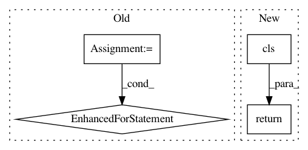

83218b7cb41cbcd3b4800313ecd8fe33b846205a,tensorflow_datasets/core/features/sequence_feature.py,Sequence,from_json_content,#Any#Any#,209
Before Change
return cls(subclass.from_json_content(value["content"]), length)
features = dict()
kwargs = dict()
for key, value in value.items():
subclass = cls._REGISTERED_FEATURES.get(value["type"], None)
if subclass:
features.update(
{key: subclass.from_json_content(value["content"])})
else:
kwargs.update({key: value})
return cls(features, length, **kwargs)
def to_json_content(self):
if isinstance(self.feature, features_dict.FeaturesDict):
After Change
@classmethod
def from_json_content(cls, value: Json) -> "FeatureConnector":
return cls(
feature_lib.FeatureConnector.from_json(value["feature"]),
value["length"]
)
def to_json_content(self) -> Json:
assert not self._kwargs, "Json export/import should be updated"
return {
In pattern: SUPERPATTERN
Frequency: 4
Non-data size: 4
Instances
Project Name: tensorflow/datasets
Commit Name: 83218b7cb41cbcd3b4800313ecd8fe33b846205a
Time: 2020-08-07
Author: cs17btech11040@iith.ac.in
File Name: tensorflow_datasets/core/features/sequence_feature.py
Class Name: Sequence
Method Name: from_json_content
Project Name: tensorflow/datasets
Commit Name: 076f53b2b8159bcabb04a83860916637aa60cb86
Time: 2020-12-01
Author: epot@google.com
File Name: tensorflow_datasets/core/splits.py
Class Name: SplitDict
Method Name: from_proto
Project Name: IDSIA/sacred
Commit Name: 907a87c18a59daa45b1f6383cc5d7f02ac2cbe97
Time: 2019-08-25
Author: gabrieldemarmiesse@gmail.com
File Name: sacred/observers/slack.py
Class Name: SlackObserver
Method Name: from_config
Project Name: tensorflow/datasets
Commit Name: 83218b7cb41cbcd3b4800313ecd8fe33b846205a
Time: 2020-08-07
Author: cs17btech11040@iith.ac.in
File Name: tensorflow_datasets/core/features/features_dict.py
Class Name: FeaturesDict
Method Name: from_json_content